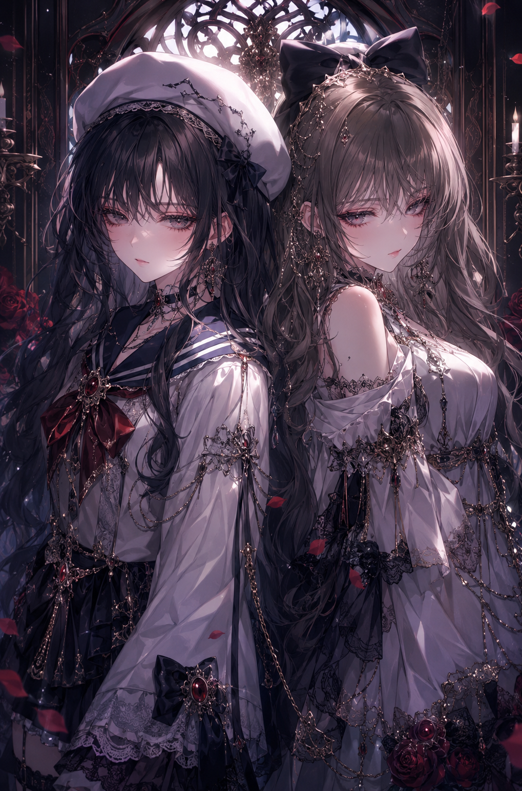

← Archive
0011
Positive Prompt
(masterpiece), (best quality), (ultra detailed), highly detailed dark fantasy anime illustration, [two] elegant women standing back-to-back, sharp alluring eyes, calm seductive expressions, delicate feminine faces, pale porcelain skin, luxurious gothic aura, intricate lace collars, luxurious embroidery, gemstone accessories, layered necklaces, refined aristocratic atmosphere, graceful feminine silhouettes, dramatic symmetrical composition, mysterious gothic ambiance, luxury fantasy atmosphere, cinematic emotional mood, soft glowing particles, elegant shadowy setting, dramatic cinematic lighting, glossy highlights on hair and jewelry, painterly anime rendering, watercolor-like shading, thin clean lineart, delicate shadow transitions, highly rendered lace and metallic ornament details, black, silver, and crimson color harmony, soft bloom lighting, pixiv featured artwork, professional Japanese illustrator aesthetic, premium gacha game illustration style, dark fantasy light novel cover art, Korean webtoon vibe, gothic aristocrat aesthetic, refined painterly rendering, trending on pixiv, artstation quality, visually stunning composition
Negative Prompt
negative prompt: (low quality, blurry, bad anatomy, extra fingers, extra limbs, malformed hands, poorly drawn face, duplicated features, rough sketch, flat colors, watermark, logo, text, jpeg artifacts, realistic photo, 3d rendering, lowres, cropped)
Positive Prompt (masterpiece), (best quality), (ultra detailed), highly detailed dark fantasy anime illustration, [two] elegant women standing back-to-back, sharp alluring eyes, calm seductive expressions, delicate feminine faces, pale porcelain skin, luxurious gothic aura, intricate lace collars, luxurious embroidery, gemstone accessories, layered necklaces, refined aristocratic atmosphere, graceful feminine silhouettes, dramatic symmetrical composition, mysterious gothic ambiance, luxury fantasy atmosphere, cinematic emotional mood, soft glowing particles, elegant shadowy setting, dramatic cinematic lighting, glossy highlights on hair and jewelry, painterly anime rendering, watercolor-like shading, thin clean lineart, delicate shadow transitions, highly rendered lace and metallic ornament details, black, silver, and crimson color harmony, soft bloom lighting, pixiv featured artwork, professional Japanese illustrator aesthetic, premium gacha game illustration style, dark fantasy light novel cover art, Korean webtoon vibe, gothic aristocrat aesthetic, refined painterly rendering, trending on pixiv, artstation quality, visually stunning composition Negative Prompt negative prompt: (low quality, blurry, bad anatomy, extra fingers, extra limbs, malformed hands, poorly drawn face, duplicated features, rough sketch, flat colors, watermark, logo, text, jpeg artifacts, realistic photo, 3d rendering, lowres, cropped)